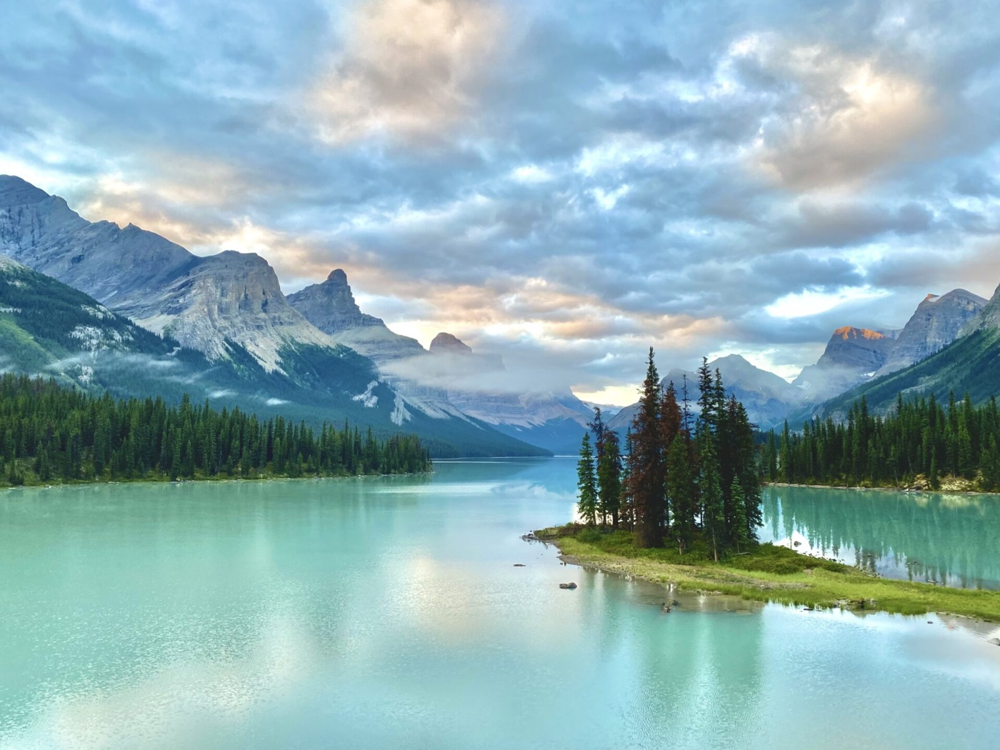
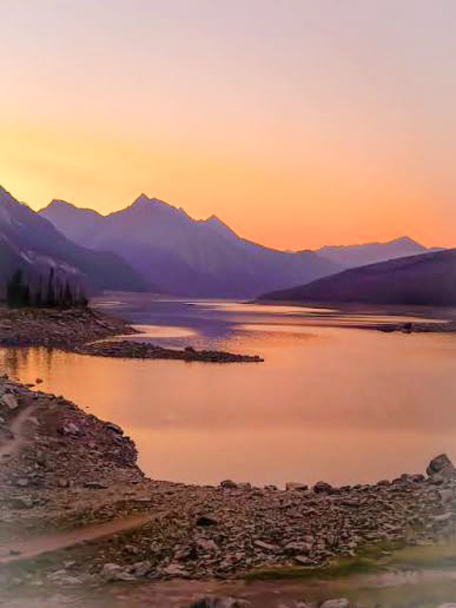
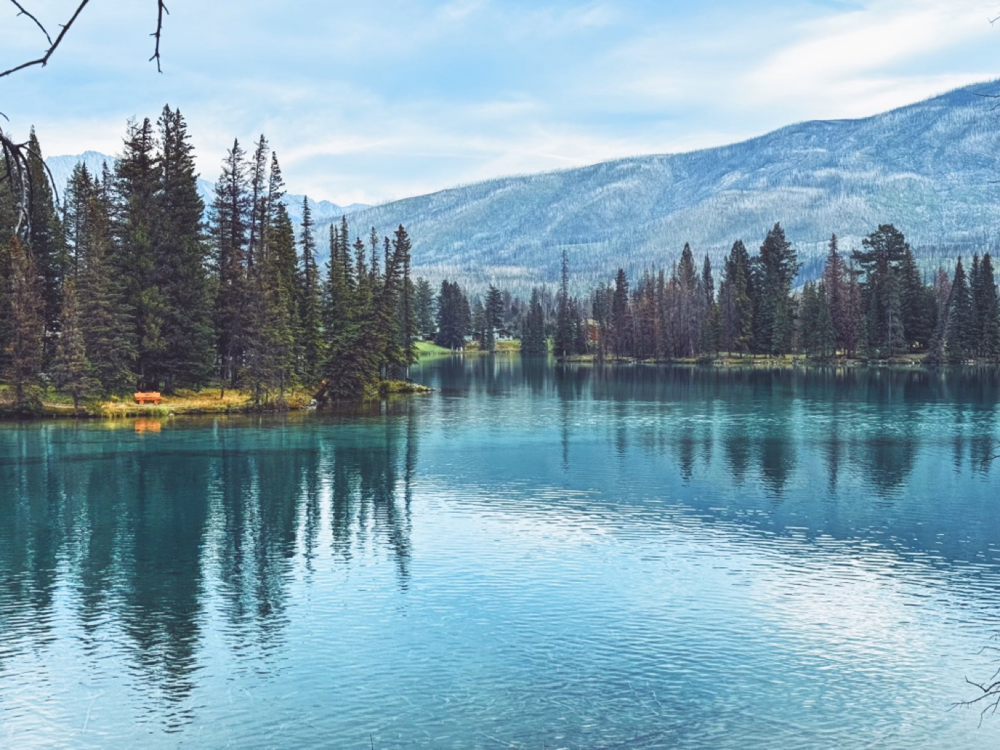
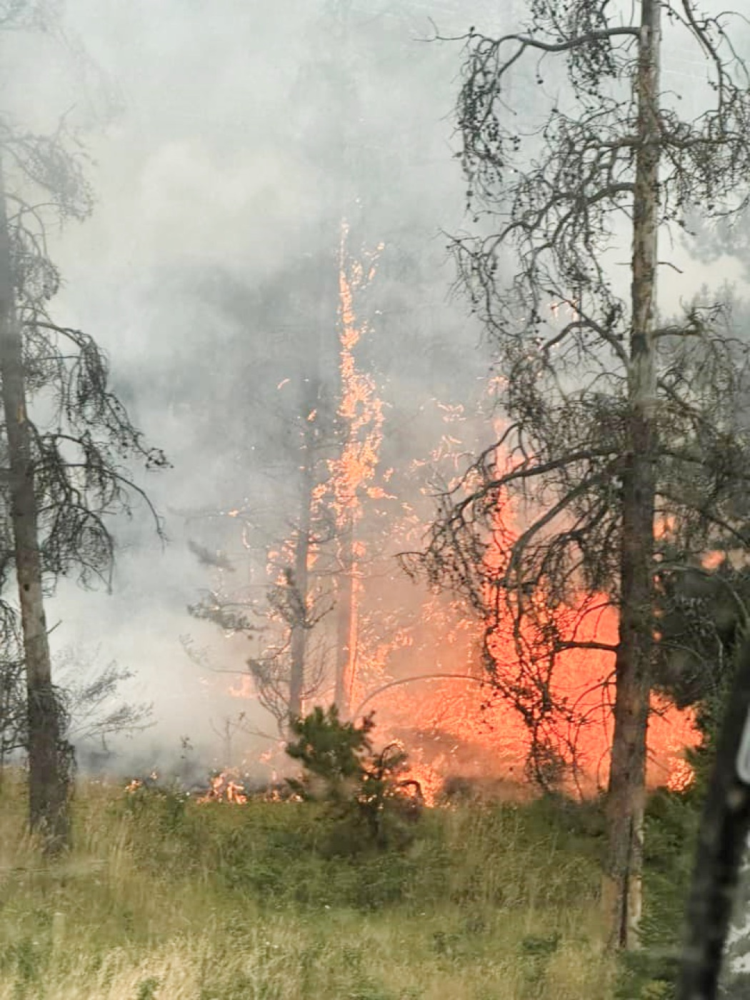

Light Filled Serene
Bright morning with clear skies and scenic mountains was the view outside my window, when I woke up in my hotel in Jasper. A gorgeous place that is impossible to capture in pictures. A town that spans to two miles carries historic significance for its culture and traditional architecture, it has so much to offer that one has to spend days to experience all of it. Best way to inhale most of its beauty is to walk on those streets, hike those trails and lay on the beaches of those lakes. Serenity and peace is heavenly, our creator has made this place and called it heaven, we renamed it to Jasper. Everything is calm even the movement and mornings are slow and calm. You can feel your heart's rhythm has slowed down, your mind is in a zen state, your body is un-bend. Because it's a small town and because it's so far in the mountains you hardly hear any vehicles or motorized noises, all you can hear is birds chirping and leaves whooshing and scrambling. Sit quietly and you notice the musical orchestration of nature. From chipmunks, elks and bears to blue jays and variety of trout fishes this place habitats most beautiful creatures.

The Foundation
It sits on an elevation of 5000 ft, and you could feel it in your lungs when you hike. Canada has done pretty awesome job in building the world class infrastructure at that elevation. It's an engineering marvel, how they built the entire railway systems, wide broad and clean roads and bridges where from weather to transport everything is a challenge. Its also mesmerizing to see how they put lot of thoughts into protecting wild life by creating guardrails on freeways. Not just that but you also get to see fancy animal crossing bridges on freeways that allow wildlife to move across. While staying in hotels here, you get to see variety of wildlife roaming in parking lots early in the morning.
One needs to be very cautious while hiking and mountain biking here because there is high chance that you encounter elks and bears. It's always recommended to carry bear spray with you. Its curious to me if these waterfalls make it green and the greenery bring wildlife or is it wildlife makes it green that brings the waterfall? Either ways its natures best synchronization where lakes, waterfalls, wildlife and pine trees blends together in a melodious way. Even the wildlife seems to understand this and enjoys it.

Waterscapes
Water that flows in its pinnacle form, cascading through those striking rocks and collecting itself in to calm state. Nature has designed this place to bring best of the beauty of every element possible. Even every rock, every plant and every tree seems hand picked and curated. Bank of the lake, so quiet, so serene brings your heart to the slowest state. A pin drop silence with just sound of water waves hitting the shore, laying on the banks of these lakes takes you to a zen world of meditation. Ears and mind feels numb, heart fills with happiness and satisfaction. There are places on other side where there are tons of waterfalls that are so mighty and loud, that makes you wonder the power of nature.
It astonishing to see how power of these flowing water can cut through such big mountains and hard rocks, making it unique and a sight of marvel. It says that minerals in these water is what makes it look turquoise and bright blue but is that what it is? I believe its not just the minerals or may be its not the minerals at all, its the purity of the nature, its the blessings on these waters, its hardships & resilience that these waters have gone through that makes it shine. Taste these waters and you will be enlightened how divinity tastes like. Put feet in these waters to learn what real meditation feels like. Stare at these waters for hours to experience the vast numb galaxies above the sky. The nature our creator has given us what amazing places to experience and admire, how can one think of harming it.

The Fire
Driving through these marvelously serene landscapes, I saw lots of mountains covered with dead burned trees, curiously searched internet for this devastation and found out that there was a huge wild fire in 2022. My heart sank looking at miles and miles of this devastation. Millions of trees fallen down like fallen soldiers after a world war. The amount and density of these trees take generations to cover a mountain. Takes generations to grow this tall, takes generations to survive and stay green. It is unfortunate that the whole generation gets wiped out by one stroke of natures wrath. Everything in nature goes through a cycle, it thrives itself and destroys itself to rebuild itself.
Dry weather and constant lightning strikes didn't leave any option but to destroy, feels like it was intentional, it feels like nature wanted it to revive itself. More than 120 Square Miles of this beauty was destroyed. Its miles of fallen trees, burned to death, some standing half burned. Although now it doesn't smell burned anymore but visuals connect your sensory's and hallucinates you to feel & smell the burn.